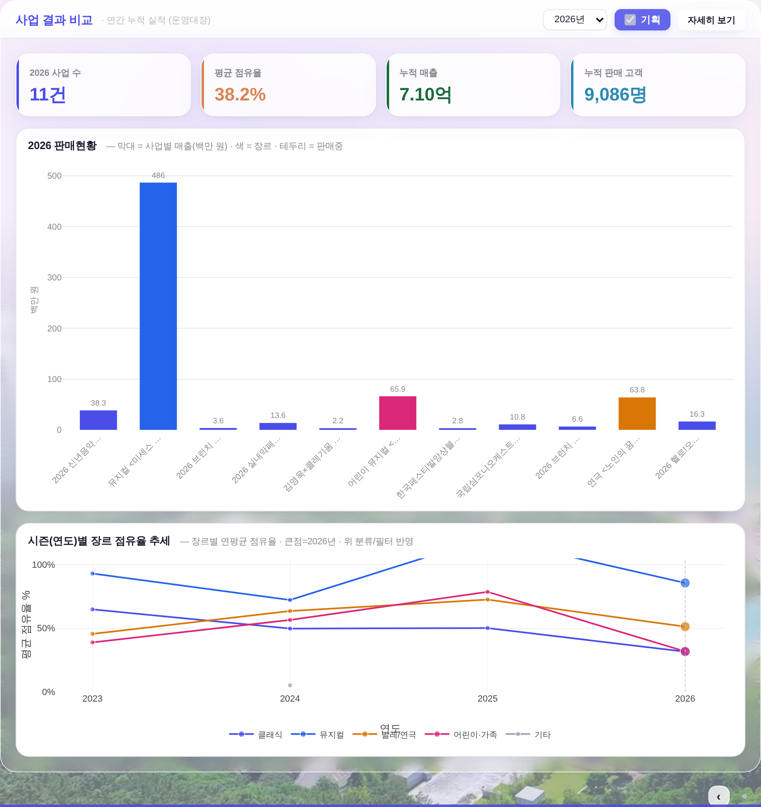
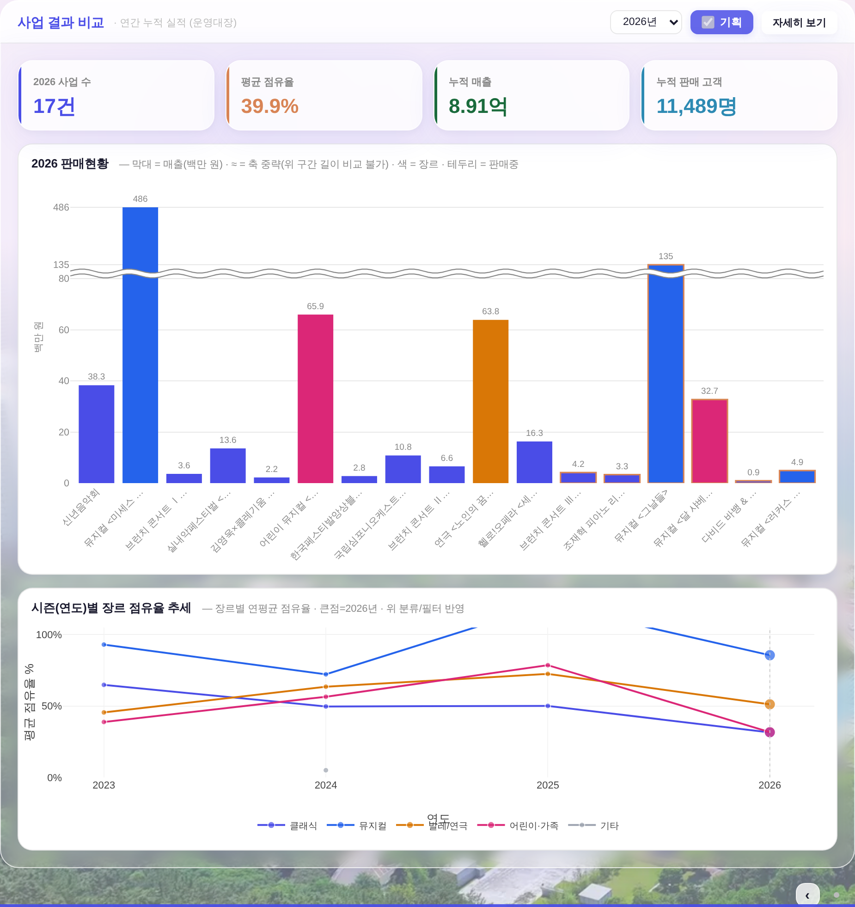
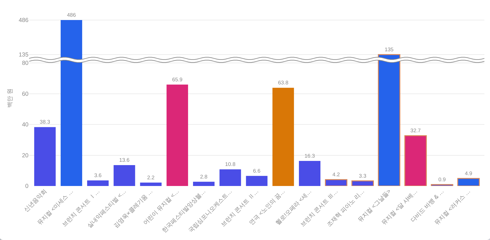

2026 판매현황 — y축 중략(≈) + 판매중 사업 합류 · 전후 비교
260804 운영자 지시 「중간에 매출이 너무 큰 것 때문에 차트가 무너지니까 ~~ 두 개 겹친 거(≈) 중략 표시로 적정선 구분지어서 다른 것도 잘 보이게」 + 「기본 디자인 정본에서 정한 값을 넘어가면 안 됨」 + 「제대로 반영됐는지 8인 평의회 · 의견 전적 수용」.
캡처 = 헤드리스 1920×1080 · ?qa=admin QA 진입로(실API·실데이터·PII 무접촉) · 데이터 = 이미 커밋된 시안 스냅샷(docs/reports/260803_사업결과비교_판매현황_플레이그라운드.html 안 260730 실측본) 재사용 · 하네스 = tools/scratch/shot_bizbars.mjs(IDX=로 전/후 판을 같은 데이터로 잰다) · 전 = origin/main · 후 = 본 PR.
두 가지가 잘못돼 있었다
① 축이 무너짐 — 2026 매출 = 486.4 / 134.5 / 65.9 / 63.8 / 38.3 / 32.7 / 16.3 / 13.6 / 10.8 / 6.6 / 4.9 / 4.2 / 3.6 / 3.3 / 2.8 / 2.2 / 0.9 (백만 원) = 최대÷최소 540배. 대형 뮤지컬 1건이 축을 다 먹어 17건 중 8건이 4.1px 이하(최소 0.6px).
② 지금 팔고 있는 사업이 안 나옴 — 막대 모집단이 운영대장(공연이 끝난 뒤 남기는 기록) 뿐이라 판매중 6건이 통째로 빠졌다. 화면 제목은 「판매현황」인데 정작 판매 중인 걸 못 봤고, 「테두리 = 판매중」 범례도 발화 0이었다.
1. 좌 열 전체 — 전 / 후
전 — 486 하나가 축 독점 · 막대 11개(판매중 없음) · 8건이 선 수준
후 — 80 위를 ≈로 끊어 압축 · 막대 17개(판매중 6건 합류)
2. 차트 확대 — 후
후 — 전폭 ≈ 띠 · 눈금 0·20·40·60·80 ≈ 135·486 · 연도 접두를 뗀 사업명
3. 실측 — 막대 픽셀 높이(같은 조건 getBBox)
| 사업(값 백만 원) | 전 | 후 | 배율 |
|---|
| 미세스 다웃파이어 486.4 | 300.2 | 298.0 | 0.99× |
| 그날들 134.5 (판매중) | 없음 | 236.0 | — |
| 100층짜리 집 65.9 | 40.7 | 182.1 | 4.5× |
| 노인의 꿈 63.8 | 39.4 | 176.4 | 4.5× |
| 신년음악회 38.3 | 23.6 | 105.8 | 4.5× |
| 달 샤베트 32.7 (판매중) | 없음 | 90.3 | — |
| 헬로!오페라 16.3 | 10.1 | 45.0 | 4.5× |
| 브런치Ⅰ 3.6 | 2.2 | 10.0 | 4.5× |
| 피아노 & 피아노 0.9 (판매중) | 없음 | 2.5 | — |
막대 수 11 → 17 · 4px 이하 막대 8건 → 1건 · y눈금 0·100·…·500 → 0·20·40·60·80·135·486 · KPI 「2026 사업 수」 11건 → 17건 · 「누적 매출」 7.10억 → 8.91억 · 「누적 판매 고객」 9,086 → 11,489명.
4. 규칙 — 언제 끊고, 언제 안 끊나
끊는 조건(전부 만족해야) — ① 값 6건 이상 ② 「하위 80% 지점」 기준 눈금 사다리 상한 B 위로 튄 값이 있을 것 ③ 본체 5건 이상 잔존 ④ 최대 ≥ B×2 ⑤ 차트 그림 높이 ≥ 120px, 압축 구간 ≥ 22px ⑥ 음수(환불 정산) 없음.
순위 기준을 쓴 이유 — 초안의 「바로 아래 값의 2배 연쇄」 규칙은 절벽이었다: 3위 값이 67.25→67.26으로 0.02만 움직여도 전 막대가 반토막 나고, 대형 뮤지컬이 2편이면 규칙이 조용히 꺼져 원래 문제로 되돌아갔다(평의회3 실측). 매일 갱신되는 차트라 「어제 화면과 비교 가능」이 우선이다.
안 끊는 예(실측) — 차트가 짧게 접힌 화면(1920×780 = 198px): 압축 구간이 안 나와 중략 미발동(shape 0개 · 눈금 자동) = 평범한 선형 축으로 돌아간다. 1400×860(278px)·1600×900(318px)에서는 발동 유지.
값은 안 바뀐다 — 접는 건 그리는 자리(y)뿐. 막대 값 라벨·y 눈금·툴팁(판매 인원·매출·점유율)은 전부 실수치. 접힌 사실은 ①전폭 ≈ 띠 ②압축 구간의 실값 눈금(135·486) ③카드 부제 「≈ = 축 중략(위 구간 길이 비교 불가)」 세 곳에서 알린다.
5. 값 신뢰 — 같이 고친 3건
① 매출 미조인은 0이 아니라 null — 0으로 떨구면 「0.0」 막대가 깔려 실적이 없는 것처럼 읽힌다(대관 분류를 켜거나 정산 원장이 아직 안 들어온 사업에서 발생). 이제 막대를 안 그리고 이름 칸만 남긴다.
② 판매 축 조인에 연도 가드 — 이름만으로 붙이면 연도 성분이 없는 상시 시리즈(브런치 콘서트 Ⅲ·호두까기 인형·헬로!오페라)의 올해 매출·「판매중」 상태가 지난해 막대에 붙는다.
③ 표 「판매좌석」 → 「판매 고객」 — 값·이름을 KPI와 같은 식으로 통일(구판은 Σ열 ≠ KPI였고 이유가 화면 어디에도 없었다).
그 밖 — 사업명 9자 자르기 전에 선택 연도 접두 제거(「2026 브런치 …」 4건이 글자까지 같았다) · 평년 분모 3년 고정(자료 있는 해로만 나눠 라벨과 최대 3배 어긋남) · 장르 축적 카드 머리말의 '23~25' 고정 문구를 선택 연도 기준 계산으로.
6. 안 건드린 것
운영자 지시(「겉면 블러 하위 레이어·흰 레이어 크기·타이틀 크기는 기틀 종속, 내용만」)에 따라 — 유리 블러 박스(_BIZM_BOX 패딩 18·blur 7·알파 .15), 글래스 헤더(제목 14.5px), 흰 카드(.bizm-card 라운드 16·간격 14), KPI 카드(값 22px·라벨 11px), 차트 축 글자 10.5px, 차트 높이 430 — 전부 무접촉. ⚠기틀 이탈 역제안 3축(KPI 값 23px·라벨 13px·장르 c축 재지정)은 거절 유지.
게이트: check_design raw hex 1590/1590 동결(신규 hex 0 — 색은 --dim·--surface-solid 토큰만) · check_refs ✓ · check_wiring ✓ · build_annual_yr PASS · smoke_login PASS · smoke_layout PASS(이젤·흰 라인 Δ0).